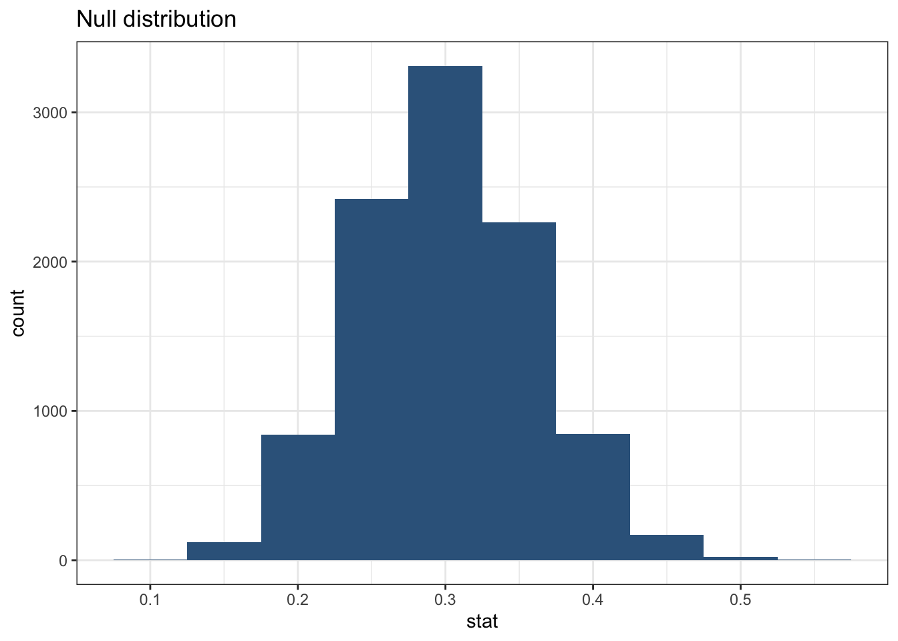
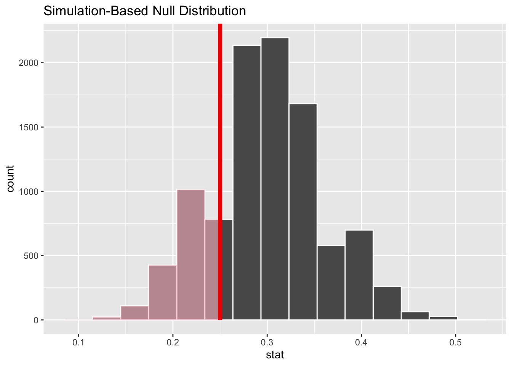

library(tidyverse)
jobs_program <- tibble(
outcome = c(rep("unemployed", 15), rep("employed", 45))
)
jobs_program |>
ggplot(aes(x = outcome)) +
geom_bar(fill = "steelblue") + theme_bw()
Single Proportion Tests
Before beginning this module, make sure to review:
International development organizations sometimes run training programs to help people find employment. Suppose the national unemployment rate in a low-income country is 30%. One organization runs a jobs program and claims success because only 15 out of 60 participants are unemployed—a rate of 25%.
Is this a meaningful improvement? Or could this difference just be due to random chance? This is where hypothesis testing comes in.
To begin, let’s simulate the data for this program in R:
Hypothesis testing is a statistical framework that allows us to make decisions about population parameters based on sample data. The process begins by establishing two competing hypotheses: the null hypothesis (\(H_0\)) and the alternative hypothesis (\(H_A\)). The null hypothesis represents the default position or “status quo”—it typically states that there is no effect, no difference, or that any observed pattern is simply due to random chance.
You can think of the null hypothesis as the skeptical position that says “nothing interesting is happening here.” The alternative hypothesis, in contrast, represents what we’re actually trying to find evidence for. It embodies our research question and claims that there is a real effect or meaningful difference that cannot be explained by random variation alone.
The logic of hypothesis testing follows a proof-by-contradiction approach. We begin by assuming that the null hypothesis is true, then examine our sample data to see whether it provides convincing evidence against this assumption. Specifically, we ask: “If the null hypothesis were actually true, how likely would it be to observe data like what we actually collected?” If our observed data would be reasonably likely under the null hypothesis, we fail to reject the null—we simply don’t have convincing evidence that anything unusual is going on. However, if our data would be extremely unlikely assuming the null hypothesis is true, we reject the null hypothesis in favor of the alternative, concluding that we have found evidence for a real effect.
For our example, we want to evaluate whether this jobs program under consideration genuinely reduced unemployment. To do this, we use hypothesis testing. First we state our null and alternative hypotheses:
Null hypothesis (\(H_0\)): The unemployment rate among program participants is the same as the national rate (30%).
Alternative hypothesis (\(H_A\)): The unemployment rate among participants is lower than the national rate.
Next, we simulate what kinds of results we’d expect if the null hypothesis were true, and then see how our observed result compares. A p-value is the probability of seeing a result as extreme as ours—or more extreme—under the assumption that the null hypothesis is true.
We then compare the p-value to a critical value (\(\alpha\)) which is the threshold at which we will reject the null hypothesis. If the p-value is less than \(\alpha\), we reject the null hypothesis. A standard threshold for \(\alpha\) is 0.05. But note that while the choice of \(\alpha\) as .05 is standard, it is also somewhat arbitrary and so the choice of \(\alpha\) can depend on the context of the study.
To evaluate the claim about the jobs program, we need to simulate a null distribution of unemployment rates under the null hypothesis. A null distribution is a collection of simulated results that represent what we would expect to see if the null hypothesis were true (in other words “if nothing was going on”).
To simulate thousands of samples efficiently, we can use the infer package from the tidymodels framework. This package allows us to specify our null hypothesis, generate random samples, and calculate the proportion of unemployed individuals in each sample.
library(tidymodels)
null_dist <- jobs_program |>
specify(response = outcome, success = "unemployed") |>
hypothesize(null = "point", p = c("unemployed" = 0.30, "employed" = 0.70)) |>
generate(reps = 10000, type = "draw") |>
calculate(stat = "prop")
null_dist |>
summarize(mean = mean(stat))# A tibble: 1 × 1
mean
<dbl>
1 0.300ggplot(data = null_dist, mapping = aes(x = stat)) +
geom_histogram(binwidth = 0.05, fill = "steelblue4") +
labs(title = "Null distribution") + theme_bw()
Here we specified the response variable as outcome, with “unemployed” as the success category. We then hypothesized that the unemployment rate is 30% (the national rate) and generated 5000 random samples from this distribution. Finally, we calculated the proportion of unemployed individuals in each sample.
Next, we can calculate the p-value for our observed resultusing the get_p_value() function from the infer package. Here, the p-value tells us in how many of the simulated samples the proportion of unemployed individuals was at least as extreme as the observed sample proportion (15 out of 60, or 25%).
# Calculate p-value using infer
null_dist |>
get_p_value(obs_stat = 15/60, direction = "less")# A tibble: 1 × 1
p_value
<dbl>
1 0.243Then we can visualize the null distribution and shade the area corresponding to our observed p-value.
# Visualize p-value in context of null distribution
visualize(null_dist) +
shade_p_value(obs_stat = 15/60, direction = "less")
If the p-value is greater than 0.05, we say that this result is not statistically significant. That is, we do not have strong evidence that the program was associated with reduced unemployment.
In this case, we find that if the true unemployment rate were 30 percent and we draw samples of 60, about 23 percent of the time we will get an unemployment rate lower than the one among the participants in the program (simply due to random chance). Therefore, we do not reject the null hypothesis (because the p-value is greater than 0.05).
In this scenario, we could say that the program caused a reduction in unemployment, even if the p-value were below .05. This is because we do not know whether the program participants were randomly selected from the population to participate in the program, and there may be other factors at play that influence their employment status. So we are simply testing whether the observed difference is statistically significant, meaning it is unlikely to have occurred by chance alone.